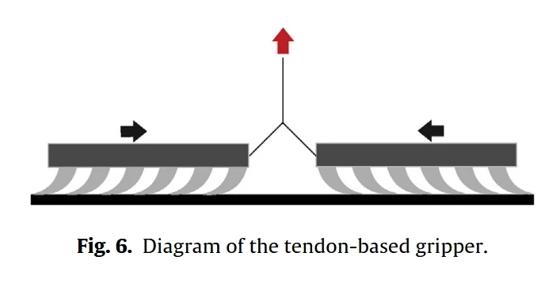

本文目录 · 7 节
一句话精要：SMA 丝收缩拉动滑块，为三片方向性干黏附垫提供剪切加载；断电冷却后由弹簧复位释放。结构紧凑，但加热保持和冷却复位构成明显的能耗与速度约束。
{kind=link}

放大查看 ↗· 论文事实、项目启发与待验证事项分开记录。
机制 / 结构如何把动作变成附着
力的路径是 SMA 收缩 → 滑块沿导轨移动 → 黏附垫向中心剪切 → 微楔接触增强。导轨限制运动方向，弹簧既提供偏置负载，也在冷却后复位。SMA 本身不是黏附材料，改变的是垫子的加载状态。
独立驱动三臂易出现张力不一致；串联的一根 SMA 改善均载，但也增强臂间耦合。某一垫未接合可能影响整个抓取，因此均载优势必须与局部失效容错一起评估。
项目启发 / 哪些值得迁移
这篇支持将 SMA 作为触发器进行评估，却没有证明 SMA 适合每一步快速接合。对双稳态构想，需分开测“越过能垒的脉冲能量”和“保持状态的能耗”，并确认断电后剪切承载路径仍然存在。
证据 / 参数与测试条件
| 项目 | 原文或精读记录 | 条件与解释 |
|---|---|---|
| 原型质量 / 尺寸 | 312 g；约 Φ165 × 55 mm | 是夹爪，不是可直接装入微型无人机的足端 |
| 响应 | 约 1 s 达到剪切力峰值；释放 <10 s | 自然冷却；实验之间间隔 1 min |
| 玻璃法向黏附 | 约 2.2–2.3 kPa，输入 17–24 W | 三片垫的测试工况，不能忽略功耗 |
| 预载 / 环境 | 9.8 N 加夹爪自重；18–22 °C | 相对湿度 40–45%；每组至少 5 次 |
实验 / 转化为可检查的问题
以下为结合阅读提出的实验建议，尚不代表本项目已完成：
- 同步记录电压、电流、温度、输出位移与剪切力，计算单次输入能量 ∫VI dt。
- 在承载下断电并记录保持、恢复时间和失败模式；再做单垫接合失败的容错对照。
边界 / 这些结论不能直接外推
SMA 直接剪切加载与 SMA 触发双稳态是不同载荷路径。本文的电压、功率、响应时间只适用于其丝长、散热和弹簧配置，不能直接写成新样机驱动设定。
关联阅读 / 沿问题继续读
- Hawkes2015 — 干黏附的剪切激活与卸载是机构设计的起点。
- Hu2019 — 展示 SMA 每步驱动身体时的频率和恢复时间约束。
- Yu2024 — 通过形态保持与几何脱附，进一步思考驱动与承载能否分工。
论文关联地图 · 当前项目记录：光滑面方案仍在筛选，历史干黏附构想不等于已定型方案。
来源 / 阅读记录与原文
整理依据：paperreading：Modabberifar2018_SMA夹爪、SMA串联均载与弹簧复位夹爪机构、SMA干黏附夹爪实验表征。